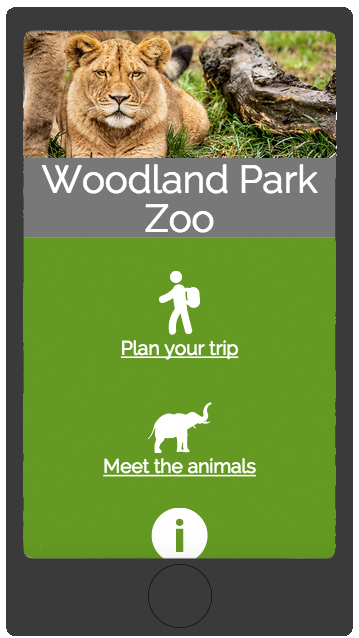
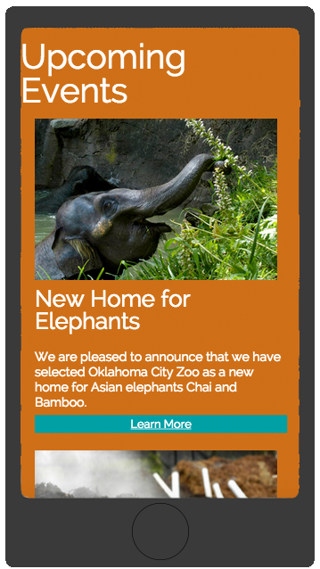
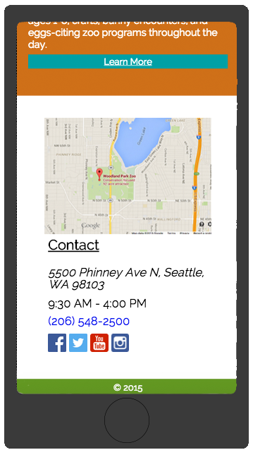

Summary
This is a quick responsive redesign of the website for the Woodland Park Zoo in Seattle. I worked on a team with one other developer to accomplish this in just a few hours, to show how easy it can be to reformat a site that is not responsive, into something that will work on any screen size.
Mobile layout
- 
- 
- 
Process
To accomplish this in the few short hours we had, we made a quick outline of what the new design would look like using the same color scheme and articles that were already being displayed on the site. By using a responsive grid and break points, we were able to make a page that has a clean and usable layout on any screen size.
 View on GitHub
View on GitHub